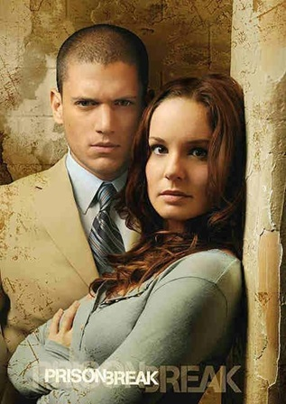

Michael J. Scofield est le héros du feuilleton télévisé Prison Break joué par Wentworth
Miller. Lorsque son frère aîné, Lincoln Burrows (Dominic Purcell), est condamné à mort pour
un crime qu'il n'a pas commis, Michael, ingénieur en génie civil, met au point un plan très
élaboré pour le faire évader de prison.L’histoire de Prison Break tourne autour de deux
frères très complices et autour du plan de Michael Scofield, le cadet de la fratrie pour les
faire évader de la prison de Fox River, près de Chicago, et les faire sortir des États-Unis.
En tant que héros de la série, Michael Scofield est présent dans tous les épisodes. Le rôle
de Michael enfant, joué par Dylan Minnette, est apparu dans trois épisodes via des
flashbacks très courts.
Après la mort du personnage de Veronica Donovan, Sara Tancredi est devenue le seul personnage
principal féminin. L'importance de son rôle dans la première saison est liée à sa position
dans la prison, le lieu où elle travaille et sa relation amoureuse avec le héros de la série
Michael Scofield. Au fil de la saison, son rôle progresse et elle finit par devenir la clé
de l'évasion de Michael. Dans la saison suivante, le rôle de Sara s'accroît encore jusqu'à
devenir l'un des personnages principaux du feuilleton; dans la saison 3, elle est captive
puis déclarée morte. Dans la saison 4, on apprend que Sara avait réussi à se libérer de ses
ravisseurs.
Liste des prisons de la série
- Fox River: Située dans l'Illinois, elle est la prison d'État de haute
sécurité où se déroule la majorité des scènes de la première saison.
- Sona: Au Panama, elle est la prison où Lincoln est incarcéré après son
évasion de Fox River.
- Miami-Dade: Dans le téléfilm "The Final Break", elle est la prison où
Michael est incarcéré.
- Ogygia: Au Yémen, elle est la prison où Michael est incarcéré dans la
saison 5.